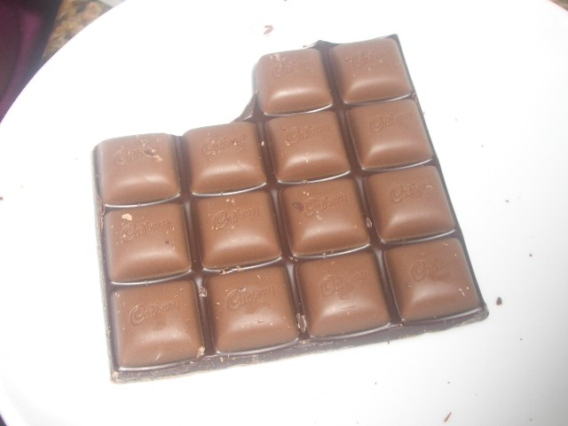
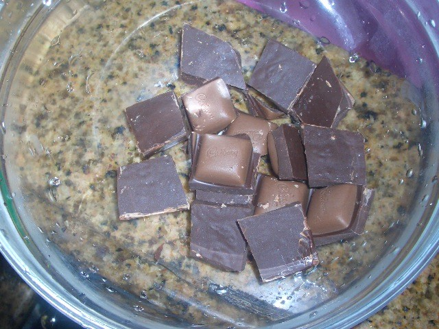
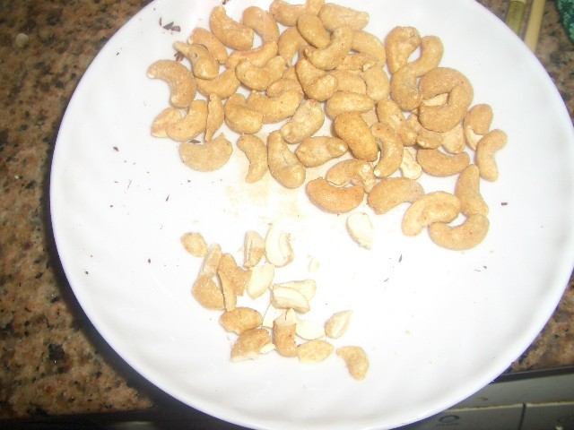
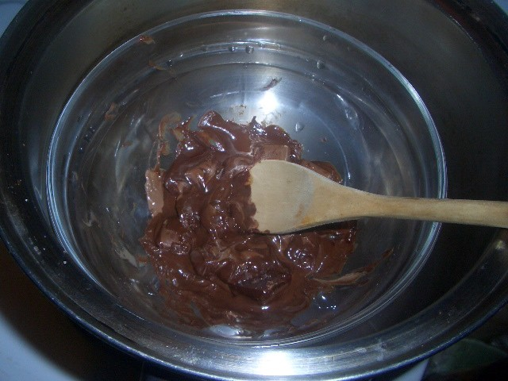
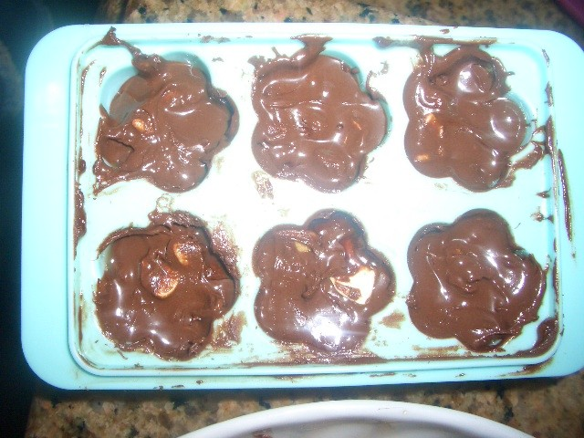

[i=s] 本文章最後由 gigi-21 於 2009/12/29 05:57 PM 編輯 [/i]
來上課了
大家要回覆可以.但
不要回覆食譜!!!巧克力脆脆
材料:
巧克力 4安士
腰果(或核桃等等) 適量
純巧克力
製作
將巧克力和腰果切碎

附件: CIMG0189.JPG

附件: CIMG0190.JPG

附件: CIMG0191.JPG
把鍋加入水
放巧克力(用碗載着)入鍋
隔熱水溶化巧克力

附件: CIMG0193.JPG
把腰果混合巧克力
倒入模中

附件: CIMG0198.JPG
放入雪櫃凝固
超短的食譜,大家不要見怪喔[:baozi27:]
(圖片...我下次做時才上傳^^)
哈哈!!太好啦~情人節需要(迷:你又不是女的)
如果說妳能把完成品拍下來給我們看的話~
更好XD
巧克力!!!!!
我最喜歡吃巧克力了///
我也很期待圖片喔XD
雖然只有看食材與製作方式，不過感覺起來非常好吃～
巧克力其實不難製作
不過需要的模具就要一大堆，如果不常製作特地去買那堆東西真的很可惜...
可以的話希望能看到小惡魔下次的完成品圖片 ^u^
製作巧克力，看起來不錯[:baozi20:]
這教學好阿～期待補圖
據說巧克力可以保暖
自己動手做不同口味和形狀的巧克力, 當禮物送給人再適合不過了
為了避免自己做成黑暗料理, 我要認真上小魔的烹飪課 (筆記中)[:baozi23:]
期待圖片教學喔~